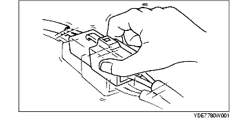

INTERMITTENT CONCERN TROUBLESHOOTING
B3E090358000W02
Vibration Method
• If a malfunction occurs or becomes worse while driving on a rough road or when the engine is vibrating, perform following the steps:
-
Note
-
• There are several reasons why vehicle or engine vibration could cause an electrical malfunction. Some of the things to inspect for:
-
- Connectors not fully seated.
-
- Wiring harnesses not having full play.
-
- Wires laying across brackets or moving parts.
-
- Wires routed too close to hot parts.
-
• An improperly routed, improperly clamped, or loose wiring harness can cause wiring to become pinched between parts.
-
• The connector joints, points of vibration, and places where wiring harnesses pass through the firewall, body panels are the major areas to be inspected.
-
• Inspect for DTCs or malfunctions by slightly shaking wiring harnesses and connectors that are suspected of causing the malfunction.

Connector Terminal Check Method
1. Inspect the connection condition of each female terminal.
2. Insert the male terminal into the female terminal to inspect for looseness.